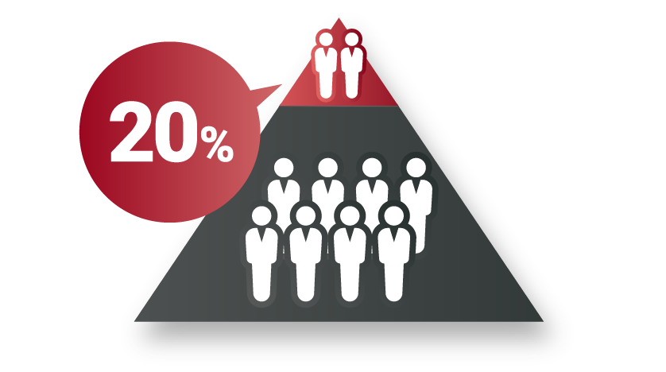
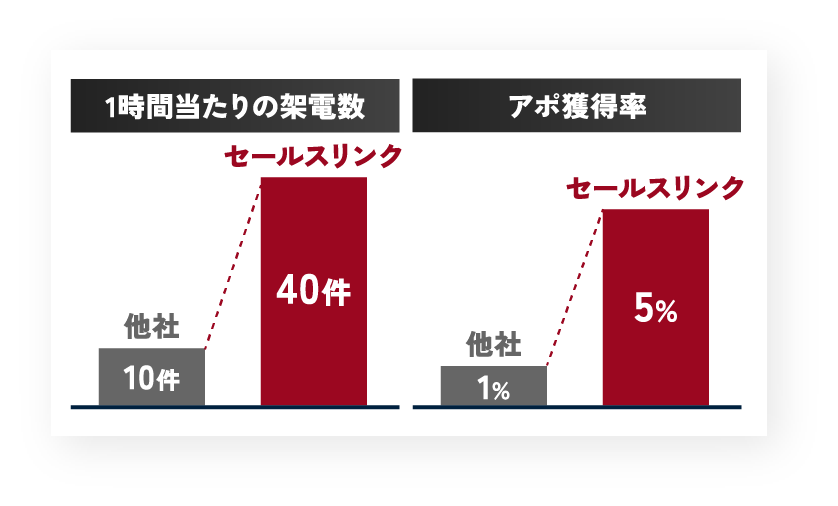
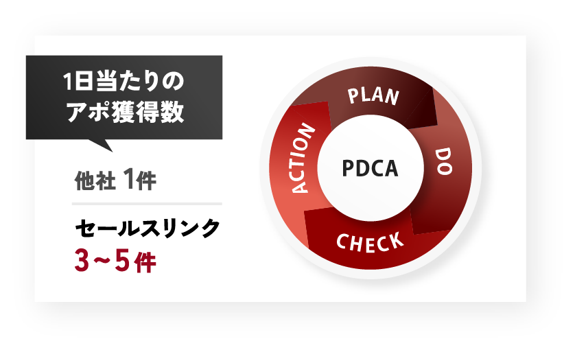
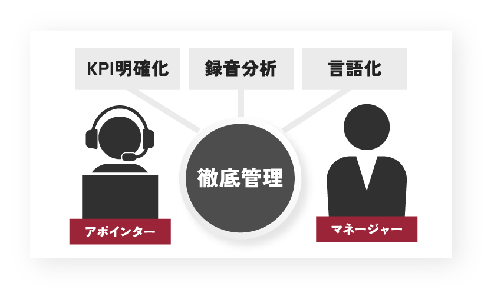
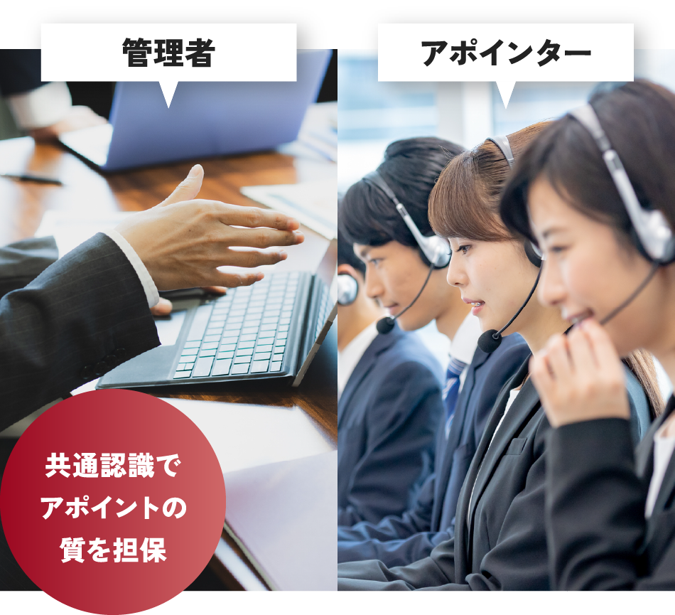

営業活動でテレアポしてもアポが取れない…そんなお悩みありませんか？
- 社内テレアポ
-
- 新規アポイントが
取れない - 社員がテレアポを
嫌々やってる - 営業にテレアポを義務化
すると
離職率が上がり
社員が定着しない
- 新規アポイントが
- テレアポ代行
-
- そもそもアポが
入らない
入っても質が低い - 商材の説明をしても
理解してもらえない - 担当アポインターの
当たり外れが激しく
成果が安定しない
- そもそもアポが
- 内製化
-
- 社内に
ノウハウが残らない - アポインターを
管理する人材がいない - 営業コストが
外部に流れ続ける
- 社内に
そのような
インサイドセールスに関する
お悩みを解決します！
確実なアポイントを獲得し、営業活動をご支援します。
- 上位20%のアポインターのみをアサイン。
成果が出ない人材は使いません。 - 担当者や決裁者の直通番号を230万件保有しています。
- 1時間あたり40コール!!架電数にこだわります。
- 今まさにキーワード検索している企業を
自動で検知し、リアルタイムでアプローチ。 - 泥臭さだけでなく2,688,000件の架電データを
もとに、企業の勝ちパターンを確実に見つけます。
- 即戦力をアサイン
- 丸投げ可能
- 膨大な架電データ
- インテントセールス
- 徹底管理
- 内製化支援
セールスリンクのテレアポ代行はなぜ結果を出せるのか？
成果を出せる
上位20％のアポインターだけで運用します！
洗練されたトークスクリプトやデータに基づいた営業手法も、
それを使いこなす“人”がいなければ成果は生まれません。
セールスリンクでは、“人”に徹底してこだわることで、外注リスクとなりがちな
「担当者によって成果がブレる」という問題を根本から解消しています。
メンバー全員が即戦力となる資質を備えているため、 確実にアポイントを獲得できます。
人材へのこだわり
MANAGEMENT
架電する人にとことんこだわっているセールスリンクが
どのように人材をマネージメントしているのかを
ご紹介します。
採用
採用前から徹底的に絞り込みます！
「成果に必要な100項目の独自基準」を設定しており、成果を見て採用を行っています。
実際、月間100名以上を採用しても実務稼働まで進むのは約20名ほどとなっています。

評価
感覚ではなく“行動量 × 成果”で判断！
私たちは育成と評価の軸をすべて定量データで管理しており、主観的・感覚的な評価は行いません。
データに基づく徹底した管理と育成によって、個人差を最小限に抑えています。

定着
成果がでるから定着率が高い
成果に繋がるPDCA体制により、1日のアポ獲得数が3〜5件以上を獲得できるようになるため、アポインターの仕事への自信が高まります。成果創出を前提とした環境があることで、お客様への価値提供に集中できます。

再現性
誰が行っても成果が出る状態へ
プロジェクトごとの基準（KPI）の明確化、録音分析による成功パターンの言語化の徹底により、個人のスキルに依存せず、再現性の高いインサイドセールス組織を実現しています。

良質なアポイントを安定提供できる理由
実際に喋った内容を全て文字起こし+録音をとり、商談前に伝えるべき点が
伝えられているか？まで細かくチェックし、アポイントの品質を担保します。
アポインターの共通認識として必ず持たせているのは、
「お客様は受注にならないと売上にならない。」ということです。
アポ数をたくさん納品しても受注につながらなければ、ご継続いただくことは不可能だと考えています。
受注確度の高い有意義な商談ができるよう、
良質なアポイントだけをお届けします。

成果につながる戦略設計
STRATEGY
営業成果の“不確実性”を徹底排除し、
良質なアポイントで営業機会を創出
営業のプロフェッショナルとして、
必ずご満足いただける結果を出します！
テレアポ代行サービスに関するお問い合わせは、
下記よりお気軽にご連絡ください。
他社比較
| 比較項目 | セールス リンク |
テレアポ 特化会社 |
営業全般 代行会社 |
|---|---|---|---|
| 高単価BtoB対応 | 〇 | × | 〇 |
| 無形・課題解決型商材 | 〇 | × | △ |
| 人材の選抜基準が明確 | 〇 | △ | △ |
| 部署/決裁者の直通リストを保有 | 〇 | × | △ |
| 受注につながる設計 | 〇 | × | 〇 |
| 稼働前の戦略設計 | 〇 | × | △ |
| テストコール実施 | 〇 | × | × |
| 膨大な実データに基づく運用 | 〇 | × | × |
| 内製化まで伴走 | 〇 | × | × |
| 教育・仕組み化支援 | 〇 | × | × |
設計 × 人材 × データ × 再現性を軸に、高単価BtoBという最難関の営業領域で、
「受注につながるアポイント」に本気でコミットする成果直結型の営業支援会社です。
私たちは、アポの“数”を並べるだけの会社でも、何でも請け負うだけの営業代行でもありません。
私たちが提供するのは、属人化したノウハウではなく、
誰がやっても成果に近づける“売れる営業の型”そのもの。
その型をもとに戦略を設計し、現場に落とし込み、KPI管理と改善を回し続けることで、
受注という結果が出るまで、貴社の営業を支援します。
支援実績
CASES
“成果が出た施策だけを厳選し提供できる”のが
セールスリンクです。
自社グループ事業での検証実績からも、
再現性のあるノウハウ蓄積と、確かな成果を
お届けすることができます。
成果を出せる秘訣
- 誰がやっても
一定の成果が出る設計 - 成果が出ない人材は
アサインしない - 数字をもとに
改善を繰り返す運用
受注に繋げるための営業設計を行っています。
上位20%のアポインターのみ稼働し、
スクリプト・運用の徹底管理。
感覚ではなく、数字で改善することで
成果が出る営業の仕組みを構築しています。
テレアポ代行サービスに関するお問い合わせは、
下記よりお気軽にご連絡ください。
稼働開始までの流れ
「いきなり架電」ではなく、
勝てる状態を作ってからスタートします
PHASE 01設計準備
現状把握と戦略の土台作り
STEP 01
事前ヒアリングシート
商材・競合優位性・KPIを整理し、
現状を可視化
STEP 02
目標設計のお打ち合わせ
「誰に・何を・どう売るか」を明確化し、
共有KPIを設定
STEP 03
架電リスト設計お打ち合わせ
成果を左右するリスト設計を策定し、優先条件を決定
PHASE 02実践検証
データに基づく“型”の作成
STEP 04
ターゲットリスト作成
無駄打ちを防ぐ、決裁者に"繋がる"リスト作成
STEP 05
トークスクリプト作成
独自ノウハウを元に「勝てる型」のスクリプト設計
STEP 06
テストコール
ISマネージャーによるテスト検証
STEP 07
改善反映
切り返しトークの改善
PHASE 03体制構築
強い布陣でスタート
STEP 08
アポインターのアサイン
成果実績のある人材を厳選して
アサイン
STEP 09
研修・ロープレ
スクリプト理解とロープレで初動成果を向上
STEP 10
キックオフ・稼働開始
認識を揃え、本稼働を開始
最短10日で稼働開始可能です
完全内製化までの伴走ステップ
営業代行で終わらせず、
“成果が出る営業組織”を自社に残します
STEP 01ナレッジ共有
成果物の納品・資産化
社内で再現できる形でノウハウをすべて共有
STEP 02育成ノウハウ提供
組織・管理体制の構築
アドバイザーとして自走できる組織作りを支援有
STEP 03完全内製化へ
自社だけで回る体制へ
再現性ある成果プロセスを定着させ内製化完了
契約終了後も、貴社の中に
成果を出し続ける仕組みが
残ることが私たちのゴールです。
ご契約までの流れ
お問い合わせから最短10日で稼働開始。
イメージをご共有し、ご納得いただいた上で
ご契約へ進みます。
- 01お問い合わせ・無料相談
- フォームまたはお電話にて、課題や現在の状況を簡易ヒアリングします。
- 02ヒアリングお打ち合わせ
- 商材・ターゲット・営業課題・現在の数値感を確認し、戦い方の方向性を整理。
- 03ターゲット・トーク・
リストのご提案 - 「この内容で実際にアポ獲得が見込めるか」をご契約前に確認できます。
- 04お見積り・条件の
すり合わせ - 体制・工数・目標に基づき、最適なプランとKPI（役割・範囲）をご提示。
- 05ご契約・稼働準備へ
- 内容にご納得いただいた上で契約締結。イメージのズレを最小限に防ぎます。
よくあるご質問
テレアポ代行の料金は
いくらですか？（目安・料金表）
こちらの資料をご確認ください。 ＞資料請求
通話内容の録音データを
自社で確認することはできますか？
可能です。
対応できない業種・商材はありますか？
toC、水商売、FXなどのハイリスクハイリターンな金融商品は弊社で取り扱いません。
実際に電話をかけるのはどんな人ですか？
また担当は固定で途中で変更は可能ですか？
弊社の厳しい基準をクリアした上位20%の成績を残すアポインターのみです。
アポインターは基本固定となります。変更をご希望の場合はご相談ください。
1名だけの稼働や、
小規模な体制でも対応してもらえますか？
対応可能です。ご相談ください。
資料請求フォーム
CONTACT
会社概要
COMPANY
- 会社名
- 株式会社セールスリンク
- 設立
- 2026年1月9日
- 代表取締役
- 甲田 葵
- 所在地
- 大阪府大阪市北区梅田
3丁目2-123イノゲート大阪10階
- 資本金
- 5000万円
- 従業員数
- 51人（グループ合計）
- グループ会社
- 株式会社alter（100％出資）
- 顧問弁護士
- 三宅法律事務所